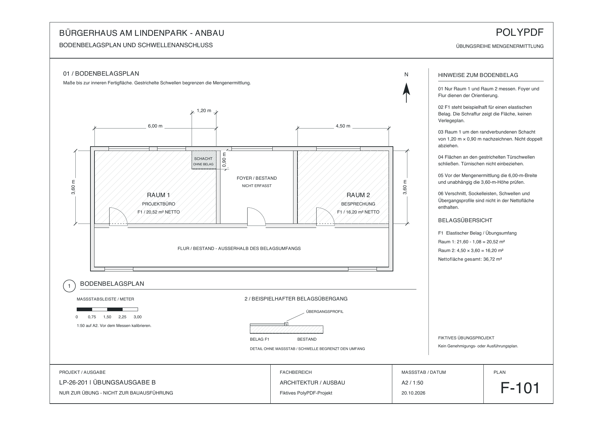
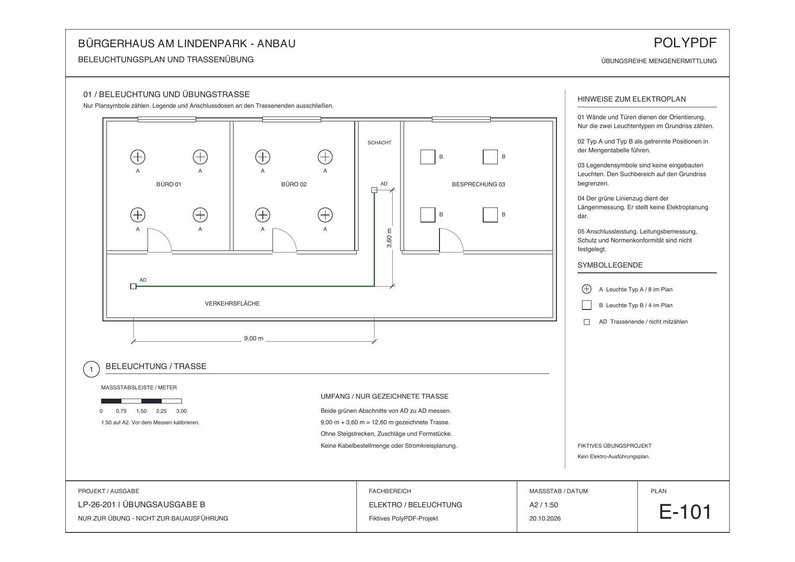

BÜRGERHAUS AM LINDENPARK - ANBAU · 20.10.2026 · ÜBUNGSAUSGABE B.
Fiktive A2-Pläne im Maßstab 1:50. Diese Unterlagen sind keine Ausführungsplanung und kein Nachweis der Normenkonformität. Die Referenzen beruhen auf der gezeichneten Geometrie; sie sind keine App-Exporte.
Kalibrieren Sie die 6,00-m-Breite auf F-101. Prüfen Sie unabhängig die 4,50-m-Breite und die 3,60-m-Höhe. Raum 1 hat eine 1,20 m × 0,90 m große Aussparung am oberen rechten Rand. Zeichnen Sie die sechs Eckpunkte der Nettofläche nach; ziehen Sie die Aussparung nicht nochmals ab.
(6,00 × 3,60) - (1,20 × 0,90) = 20,52 m². Raum 2 umfasst 4,50 × 3,60 = 16,20 m². Die Nettofläche beträgt 36,72 m². Foyer und Flur sind ausgeschlossen.
Für eine getrennte Free-Übung kalibrieren Sie zuerst und prüfen mit einer manuellen Längenmessung einen anderen Abstand. Zeichnen Sie anschließend beide Nettoflächen nach. Die Längenprüfung gehört nicht zur Flächensumme. Zwei unabhängige Längenprüfungen plus beide Flächen erfordern vier manuelle Messungen.

Beispielannahmen: 10 % Verschnitt und 2 m² je Paket. Daraus folgen 3,672 m² Zuschlag, 40,392 m² Bedarf und 21 ganze Pakete. Die Bestellfläche beträgt 42 m²; 1,608 m² entstehen zusätzlich durch Packungsrundung. Diese Annahmen sind keine Produkt- oder Ausführungsvorgabe. Preise, Lohn und Steuern sind nicht enthalten.
E-101 enthält 8 Leuchten Typ A und 4 Leuchten Typ B. Legendensymbole und die zwei Anschlussdosen AD an den Trassenenden zählen nicht mit. Führen Sie beide Leuchtentypen getrennt. Die grüne Trasse misst 9,00 + 3,60 = 12,60 m.
Die Trasse enthält keine Steigstrecken, Zuschläge, Formstücke, Leiteranzahl oder Elektroplanung. Sie ist keine Kabelbestellmenge.

Die UTF-8-CSV-Dateien verwenden Semikolon und Dezimalkomma. Die Bodenbelagsdatei enthält erläuternde Einzelwerte, Abzüge, Zwischen- und Gesamtsummen: Addieren Sie nicht die gesamte Mengenspalte. Prüfen Sie Ihre eigenen Anmerkungen, Einheiten und exportierten Formeln vor einer Weiterverwendung.
Die englischen historischen Mac-Exporte gehören zu anderen Zeichnungen und Fußmaßen. Sie wurden nicht als deutsche Ergebnisse umetikettiert. Neue deutsche App-Exporte und vollständige Mac-/Windows-/iPad-Übungen werden gesondert dokumentiert.